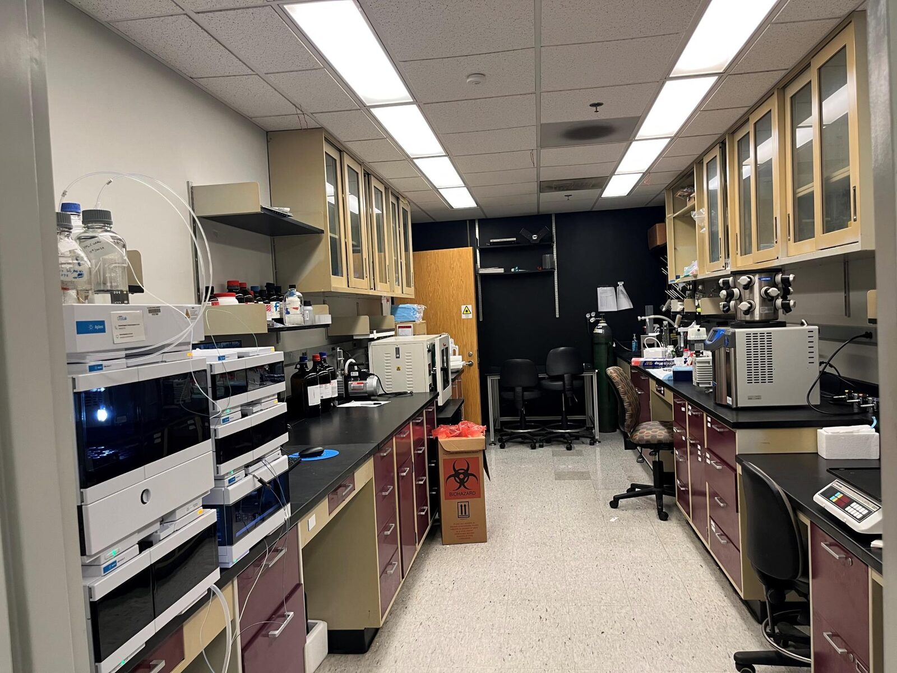
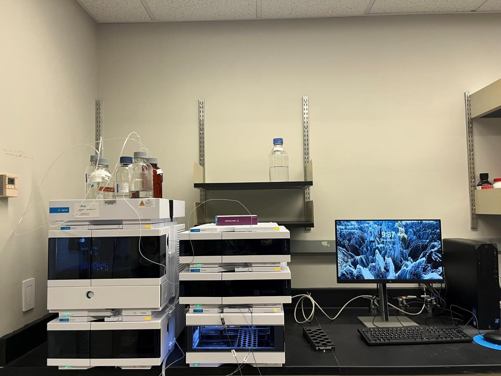
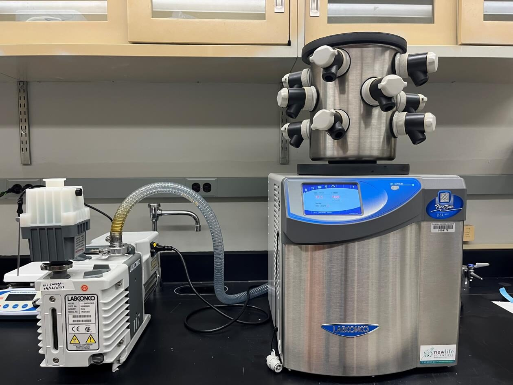
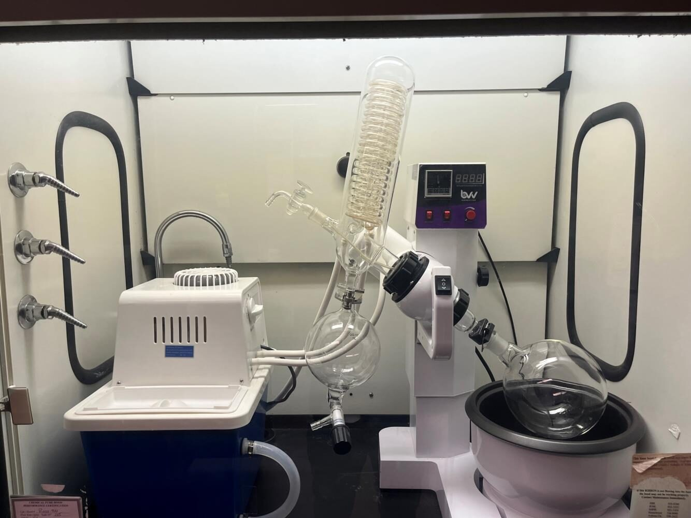
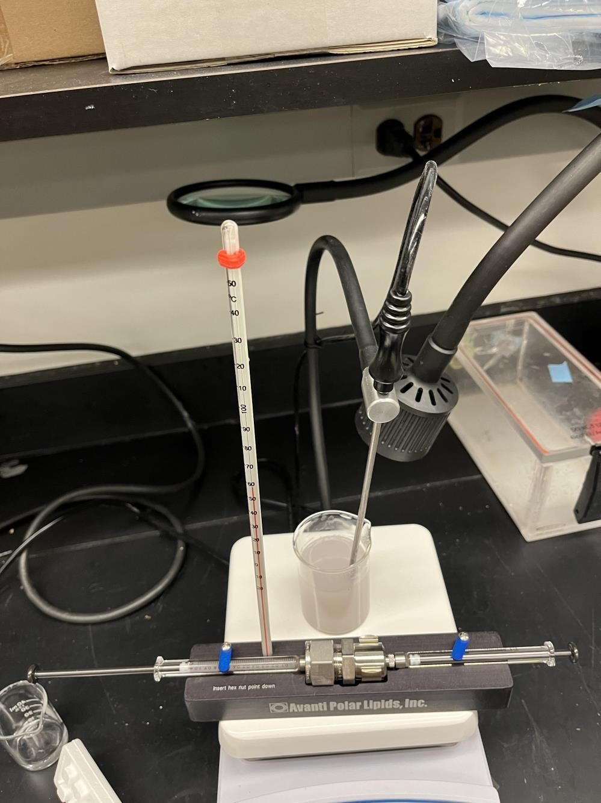
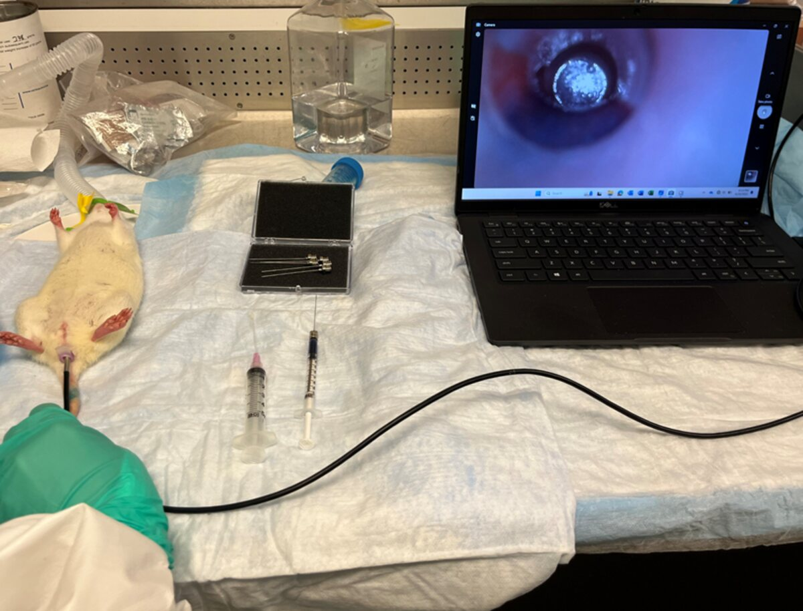
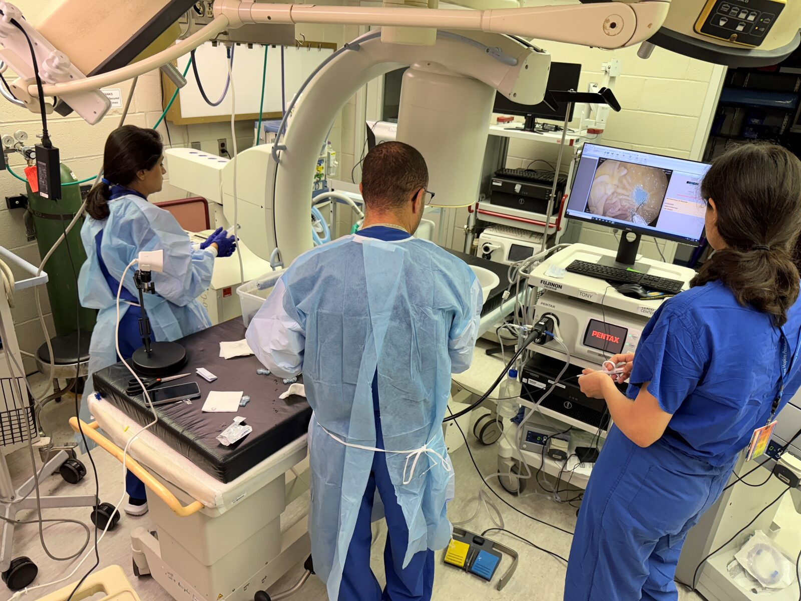
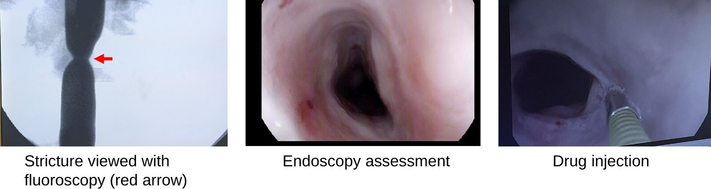
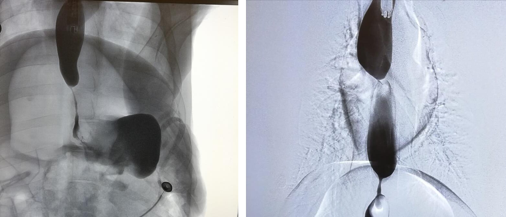
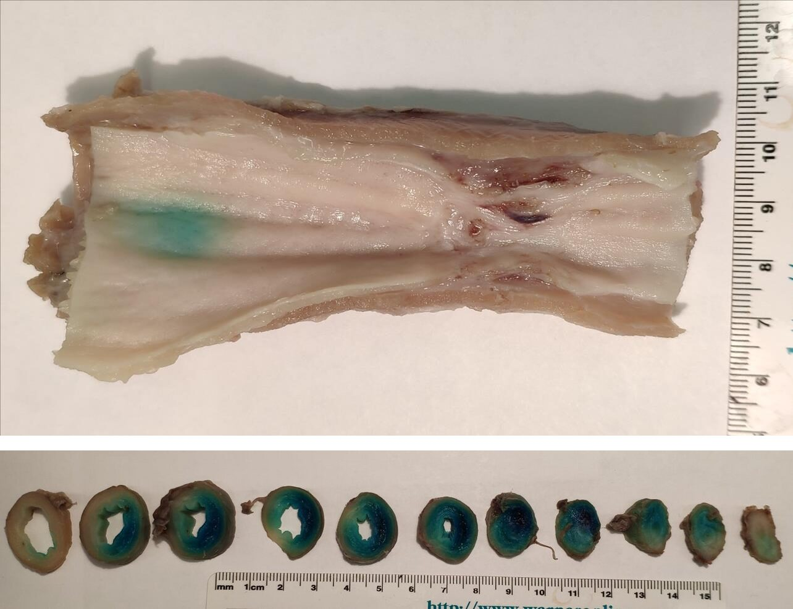

Resources
The Center's laboratories support chemistry, formulation, and endoscopic work in small and large animals at a single site, so that candidate compounds can progress from synthesis to large-animal studies without transfer between institutions.





Compounds that fail in vivo return directly to the design stage.



Swine model of luminal stricture; rat models of stricture and of perianal fistula; intestinal transplant. Models are selected for intact physiology, including blood supply and luminal contents, and for endpoints with clinical relevance.

